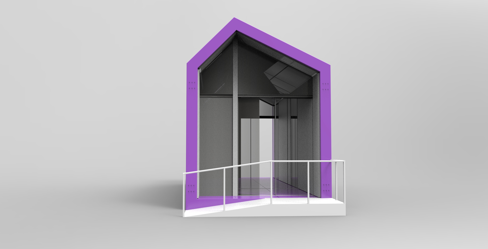
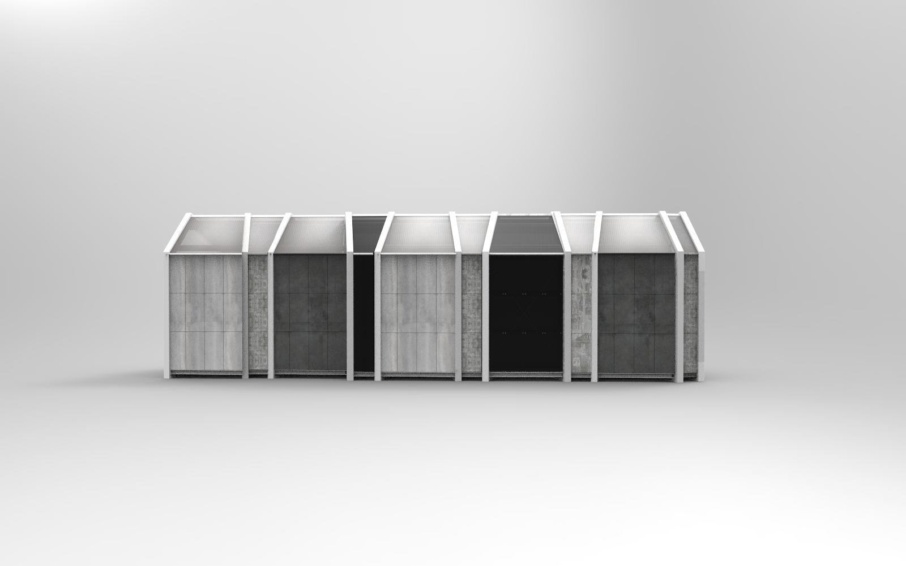
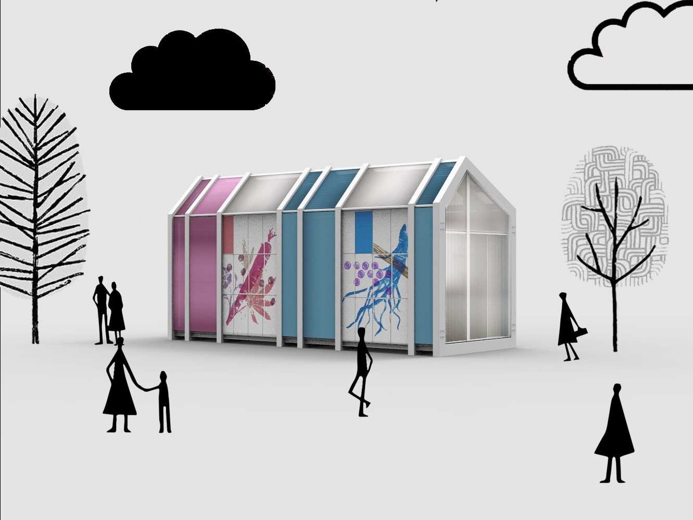

Baco
Il padiglione che muta
Baco
Baco è un padiglione prodotto dalla collaborazione tra Aliva e Refin e ideato per consentire la totale libertà, da parte del cliente, di generare il proprio padiglione espositivo, grazie all’utilizzo di un sistema modulare componibile e alla personalizzazione delle ceramiche esterne di copertura. Baco è riutilizzabile e adattabile ad ogni contesto semplicemente modificando la sua forma e sostituendo le ceramiche che lo rivestono.
Designers: Giulia Nascetti, Ludovica Rosato, Serena Sacchetto, Giulia Tonioni





